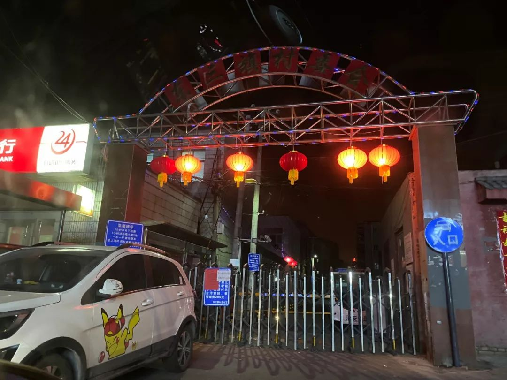
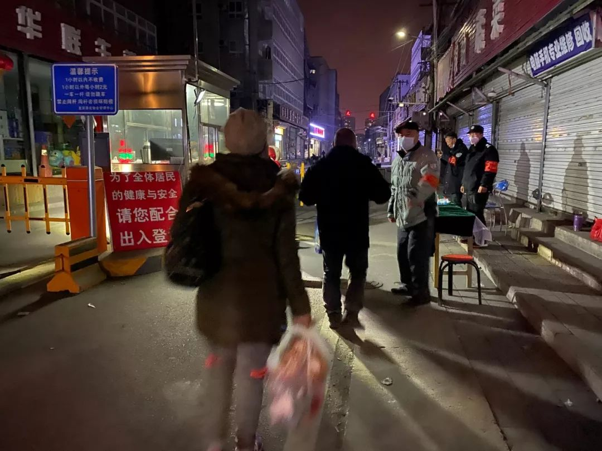
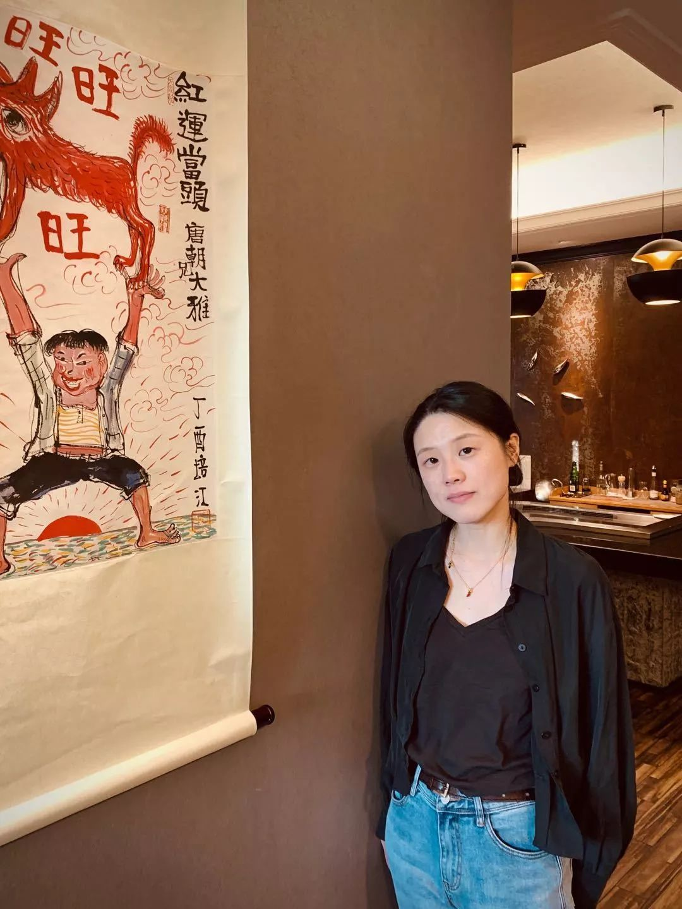

自我隔离的日子，我和我的“疑病症”母亲 | 三明治武汉每日书07
原文链接 备份链接 今天是“武汉日常”每日书的第七篇。这次疫情，让原本拜年欢聚的节日变得风声鹤唳，小家庭模式的亲情纽带在此时似乎成为了对抗疫情时人们能牵住的最后一根温情的绳子。但家人相处也是有难题的。每日书作者里一位宅居的年轻人记录了这 …

最近几天，已经回北京的上班族，已有不少人在外流浪着。陆续有北七家等地的房客被租住小区拒之门外，据本刊记者不完全统计，这些小区当中的大多数都由村委会管理，这类强调“村民自治”的小区，自认为在社区管理层面有较大的自由度。他们对房客提出了要求，“自行在外隔离14天”，“14天后出示三甲医院出具的健康证明”。
记者 | 驳静

“先别回北京”
1月30日晚上8点左右，本刊记者来到北京市正北方向的东三旗村，该村隶属于昌平区北七家镇，往南不到两公里就是“天通苑”社区。作为北京市著名的外来务工者聚居地，两者容纳了北京近70万常住人口。
回南路将东三旗村劈成地理上相对独立的两个区域，路两侧共有4对正门，除此之外的侧门和小门，因为此次新冠肺炎疫情，全都被临时锁了起来，只余正门供居民出入。
东三旗村委会门口（驳静 摄）
其中一个正门口，有七八位戴着红袖章和口罩的工作人员，各有分工，岗亭里可以量体温、登记身份信息，右侧临时加设了一张条案，也用于登记。拖着拉杆箱的年轻人，是重点排查对象，除了身份证，还需出示火车票，以证明自己的出发地城市。其中到此巡逻的村委会成员告诉本刊记者，除此之外，还得打电话让房东来领人，“如果房东不愿担责任，那也不能让他们进去”。如果来者与湖北有关，“直接打120拉走去医院”，不过目前为止，尚未出现类似情况。
本刊记者走到另一个大门口时，赶上值班人员的松懈时刻，测了体温后就混了进去。门内华欣超市的杨老板告诉本刊记者，他今年没回老家，守着他的超市和十几个空房间。不过房客们都回乡过年了，前几天，他挨个儿打电话给他们，转告村委的通知，“先别回北京”。东三旗这一片多有类似民房，出租给外来务工者，月租在1千左右（20平米左右厨卫兼备的独立房间）。另一位叶姓房东告诉本刊记者，他管理着上百个房间，其中七八十间的房客回乡了，应村委会要求，他也早已经将暂缓回京的通知转达了出去。
杨老板告诉本刊记者，他看到的情况是，1月30日上午还是“不让进”，到了傍晚“松快了，放进来一些”，前几天，被放进社区的外来务工者数量也不多。9点半左右，本刊记者离开之前，又在回南路上看到一位拉着行李箱匆匆而行的小伙子，他说自己刚从山东回来，被挡在门外，村委告诉他“晚了5分钟”。具体“比什么标准”晚了这珍贵的5分钟，他不得而知。
驳静 摄
1月31日，北京市政府发文称，“除必需行业外，各企业2月10日上班”，将迫在眉睫的返京大潮又往后推迟一个礼拜。只不过，这个文件仍然为企业要求员工返京弹性工作留有余地。已经回京的上班族，已有不少人已经在外流浪数日。陆续有北七家等地的房客被租住小区拒之门外，据本刊记者不完全统计，这些小区当中的大多数都由村委会管理，这类强调“村民自治”的小区，自认为在社区管理层面有较大的自由度。他们对房客提出了要求，“自行在外隔离14天”，“14天后出示三甲医院出具的健康证明”。
就在本刊记者探访东三旗村的这天晚上，“80后”柴萌与她家人正在几公里外的东二旗新村门口，被村委会拒之门外。她告诉本刊记者，他们连续开了1200多公里，从哈尔滨开回北京，没想到会回不了在北京的家。
以下是柴萌的讲述。

新冠肺炎制造的“北漂”
1月23日，我们从北京出发回我老家哈尔滨。走之前也犹豫，疫情新闻我每天都在关注，钟南山院士教的抗肺炎方法也记在心里。所以我想着，那就自驾回去，安全性强过飞机和火车。我奶奶身体不好，我得回去看她；必须回乡的另一个原因是我女儿，她才4岁。孩子出生不久，为了工作，不得不把她送回老家，请我妈妈带。作为孙辈，作为女儿，作为母亲，我都需要回乡。
1月29号，我们就又出发回北京了。之前房东打来电话，询问我和家人的身份信息，还问我们在哪里过年，当时也没说不让回。我们这个小区叫东二旗新村，是个回迁小区，我们已经在这里租住了两年，两居室，房租4千一个月，过年的时候刚转给房东三个月1万2的房租。
我们到东二旗新村的时候，是下午6点，天已经黑了。门口有人给我们测体温，登记信息，然后告诉我们，不能进。他们的原话是，“自行隔离14天，然后出具三甲医院的健康证明”，这样才能放我们进去。

一开始我们还跟他们辩解，能不能好歹让我们回去，保证自我隔离。但是小区管理者口气很硬，坚决不同意，说他们要为东二旗新村1千多村民负责，“大家都上有老，下有小，请你们理解”，疫情时期需要特殊政策，其实我挺能理解。但挺讽刺的地方是，我们在小区门口一直等到将近12点，看到小区村民进进出出，也有不戴口罩的，还有随地吐痰的，你知道他们开车去了什么地方，有没有带着病毒回来？如果不知道，这种隔离是否有意义？而我们从哈尔滨回北京，为何就不能回小区了呢？后来我气极而笑，跟我家人开玩笑说，难道肺炎病毒还会认人，专盯我们这些外来人口？
等在小区门口的这个晚上，我们一共碰到三户同病相怜的人。一对是唐山回来的母子，我看那位妈妈抱着孩子，争辩不过，气得扭头就走；还有两户，都是从内蒙回来，都拖家带口，交涉失败后，也走掉了。只有我们还抱着希望多等了几个小时。
我们也打了110。接电话的同志给我们一个这边片区派出所的电话。这个电话打过去，对方也表示，他们也无能为力。熬到12点多，我们只得撤了，找了个快捷酒店对付了一晚。
不过酒店说，过了今晚他们就停止营业了，这意味着明天我们又得接着游荡，没想到在北京生活了十几年，需要为下一晚住在哪里而焦虑。我一直挺喜欢北京这座城市，我在这里读大学，工作，成家，这么多年，还是第一次报警。也是第一次感觉到自己像是流浪狗，这一天一夜，东奔西跑，担心肺炎疫情，担心自己的安全，也担心工作，还有房贷和车贷，想起了很久以前的“北漂”心情。
 东三旗附近的旅馆，前台告诉本刊记者，他们已经停止接受客人了（驳静 摄）
东三旗附近的旅馆，前台告诉本刊记者，他们已经停止接受客人了（驳静 摄）
第二天上午，我们又回到东二旗新村，一是想碰碰运气，二是想回去拿点生活用品。我甚至跟村委说，把我罩起来，或者给我消个毒，只是放我进去一下，很快就出来。他们回答我说，“进去一分钟和一天，是一样的效果”。他们还强调，村里可以自治，他们这样做没有错。最后我们只好把钥匙给房东，让他去家里帮着拿了一点东西出来。
今天我看到一条新闻，说北京市民政局副局长，在（北京市新冠肺炎防控的）新闻发布会上表示，“不是确诊肺炎病例，没有明显发烧咳嗽等，应让外来人员自由进入小区”。受这条消息鼓励，我们就给北七家镇政府打电话，得到的回复是，镇政府并没有下过一刀切的驱逐通知。接着我们又给东二旗新村村委打电话，问他们，人家镇政府都这样说了，能不能放我们进去。
原本以为有希望，可是他们依然强硬，“它（北七家镇政府）妥协，我们也不会妥协的”。我现在担心，如果疫情持续发酵，14天后，他们也不会让我们再回去的。
这两天交涉下来，我有种感觉，我觉得东二旗新村在以很无措很茫然的方式做自我保护，一味地相信，只要把我们这些外地人驱逐出去，他们就是安全的。可实际上，稍微学习一些疫情防控知识，就能发现，这个小区的自治举措里，没几项是真正科学有效的。特别可爱的一件事，第一天晚上，给我们测体温的那个人，照着我脑门测体温，测出来34度3，我当时都乐了。还有最简单疫情防控常识，外来务工者回到北京，流浪在外住酒店，假设这些人当中，有人感染，难道不是意味着更大的风险吗。能打的电话都打了，能做的努力也都做了，我们现在在等待“裁决”。
刚才在微博上看到一张照片，拍的是捐给武汉的三箱物资，上面贴了张标签，“日本汉语水平考试考试HSK事务局支援湖北高校物资”，上面还有一行字，写着“加油！中国”，下面还有一行小字，“山川异域，风月同天”。这两个词突然就击中了我，它们似乎传达出来的美好情感和复杂情绪，让处在眼下境地中的我，愣了好一会儿。

_（为保护受访人，个人信息有模糊处理。_）
作者档案

**驳静
**
三联记者，爱听故事、讲人话。
26分钟前


三联生活周刊
个人微博、豆瓣都是：驳静

⊙文章版权归《三联生活周刊》所有，欢迎转发到朋友圈，转载开白请联系后台。未经同意，严禁转载至网站、APP等。
驳静
微信扫一扫赞赏作者 赞赏
长按二维码向我转账
受苹果公司新规定影响，微信 iOS 版的赞赏功能被关闭，可通过二维码转账支持公众号。
原文链接 备份链接 今天是“武汉日常”每日书的第七篇。这次疫情，让原本拜年欢聚的节日变得风声鹤唳，小家庭模式的亲情纽带在此时似乎成为了对抗疫情时人们能牵住的最后一根温情的绳子。但家人相处也是有难题的。每日书作者里一位宅居的年轻人记录了这 …
原文链接 备份链接 我住在汉口，是这次疫情的重灾区。那个被查出疫情源头的华南海鲜市场，就在火车站对面，离我家大概20公里。我希望疫情早日结束，对我们国家的经济影响小一些，所有人都能够平安和健康。 口述 | 小 玲 整理 | 沈 林 我叫小 …
原文链接 备份链接 非常时期，武汉成了全国人民挂念、祈福的城市。封城后，武汉人民的真实生活是什么样？ 正和岛自1月26日起特别推出《叶青：我在武汉疫区的第N天》专栏。叶青是一位定居武汉40年的市民，也是一名学者和官员。接下来的一段时间，他 …
原文链接 备份链接 2020年的春节，我一个人在武汉度过。 1月16日，小年夜的前一天，家人和好友询问我的归期，我回答还不能确定。我是一个心理咨询师，这段时间积攒的案头工作和学习的课程太多，便想着只给自己放三天假，回去跟家人吃个年饭就返 …
原文链接 备份链接 封城已过去一周，在这个谈武汉人、湖北人色变的时候，我们想要好好看一看他们。今天我们挑选的几篇读者来稿，围绕着湖北的武汉和黄冈，讲述他们在旋涡和风暴中心的日子。他们有些住在城市，有些住在乡村和小镇。环境的不同给了他们不 …